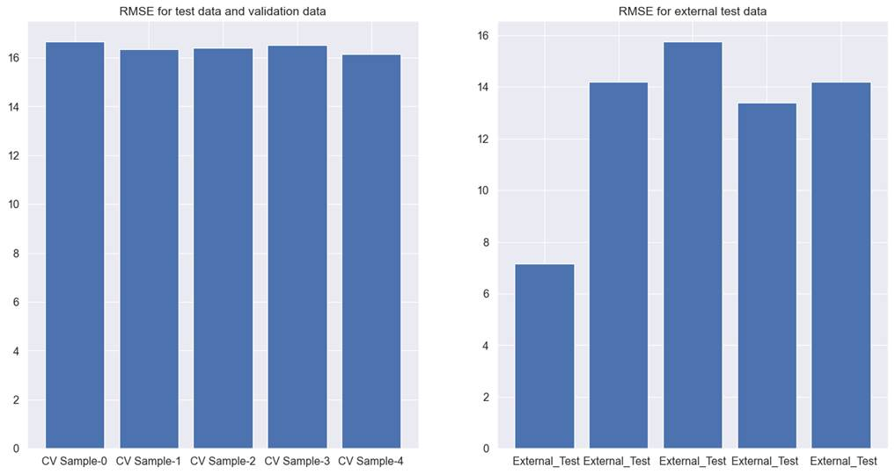
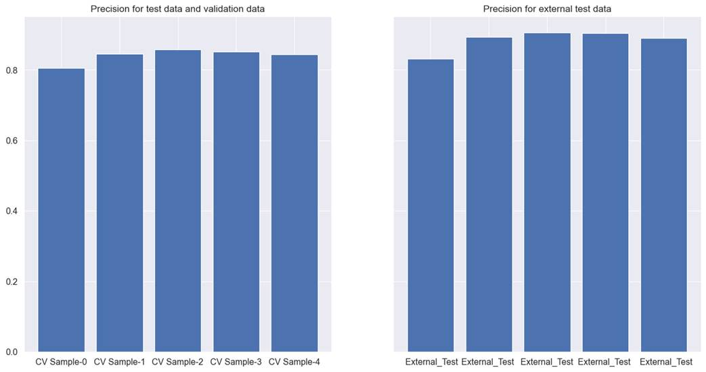
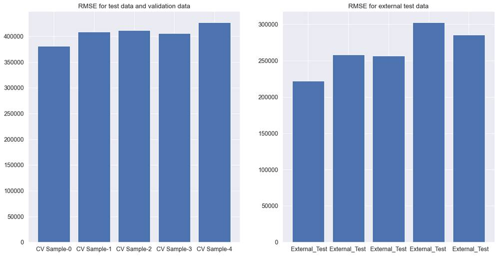
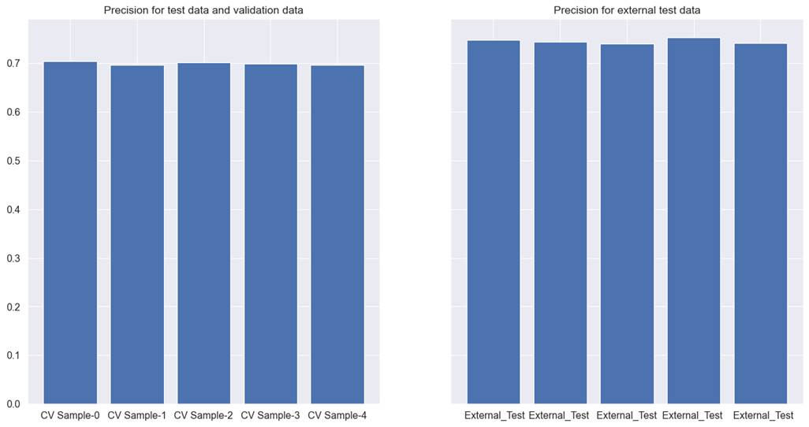

5.3: Putting Everything Together
After learning different methods of
feature engineering, let s now put our knowledge into practice and measure the
model performance. We will use both linear and tree-based nonlinear models for
benchmarking purposes. In linear, we will use linear and logistic regression.
For tree-based nonlinear, we will use Lightgbm, and Xgboost models.
In some cases, linear models will
perform better than nonlinear models and vice versa. We will select the model
which gives the best performance and is easy to explain to a non-technical
audience. The results will be the first benchmark performance. We will try to
find models which perform better than the benchmark performance using methods
discussed in section III.
5.3.1 Hotel Total
Room Booking
Let s try to understand the hotel
total room prediction data. It is a regression problem and the total occupancy
for hotels for a specific check-in date is the dependent variable. We tried
Lightgbm, Xgboost, and linear regression. Lightgbm regression gave the best
performance. Figure 5.3.1 explains the performance of the Lightgbm tree model
on cross-validation test, validation, and external test data.
The average RMSE for the
cross-validation test and validation data together is 16.4. The average RMSE
for the external test data is 12.9. This model predicts the total number of
rooms that will be sold for a future check-in date, based on which the hotel
property manager will ascertain market demand and set the price for the unsold
rooms.
For any prediction made for total occupancy,
RMSE is an indicator as to what extent predictions might have an error. RMSE of
16.4 means, predictions might be off by 16 extra rooms or 16 less rooms. For
the external test data, we can see that model is performing better at 12.9
RMSE. There are 3 issues in this model. The first issue with the model is that
RMSE is very different across different test sets. The second issue is that
within the external test data, RMSE is different for each cross-validation. The
third issue is high RMSE i.e., we will like to have a model which has the
lowest amount of RMSE possible. If we can get a model with a lower RMSE, it
will be easier to convince the stakeholders to use the model.
These 3 issues make the model
unreliable to use. We will try to use feature selection to reduce the noise in
the model. We will discuss different methods for feature selection across
different chapters in section III.

Figure 5.3.1 performance of Lightgbm
tree model on cross-validation test, validation, and external test data for hotel
total room booking prediction
5.3.2 Hotel Booking
Cancellation
Let s try to understand the model
performance for hotel booking cancellations data. It is a classification
problem and 1 means canceled and 0 means not canceled. We tried Lightgbm,
Xgboost, and logistic regression models for classification.
We are using the precision score for
ascertaining model performance. Overbooking is a phenomenon wherein hotels
sometimes sell more rooms than their available. As a result, a situation can
arise when more than one guest can come to the hotel on the date of check-in to
request their stay. On the other hand, many guests cancel their booking before
the check-in date. This might lead to another problem wherein hotels have an
unsold inventory of rooms.
If we can develop a model that can
identify transactions most likely to be canceled, with a high degree of
precision, hotels can minimize the loss occurring due to unsold inventory and
increase profit by indulging in overbooking.
Xgboost had the highest precision,
followed by Lightgbm. Xgboost had lower recall than Lightgbm. Figure 5.3.2
explains the performance of the Xgboost tree model on cross-validation test,
validation, and external test data for hotel booking cancellation.
The Xgboost classifier has a few issues.
Firstly, the precision values are not above 0.9 in both the test data.
Secondly, the precision score varies across cross-validation samples. For
example, in the first cross-validation training data, external test data has
the lowest precision score and for the third cross-validation training data,
precision is the highest. Thirdly, although precision scores are very near to
each other, there is a difference of 0.04 in precision scores between external
test data and the combination of cross-validation test data and validation
data.

Figure 5.3.2 performance of Xgboost
tree model on cross-validation test, validation, and external test data for
hotel booking cancellation.
We will try different methods of
feature selection discussed across different chapters in section III to help
resolve the noise issue and try to identify features that are high in the
signal.
5.3.3 Car Sales
Let s try to understand the model
performance for car sales data. It is a regression problem and the selling
price of the car is the dependent variable. We tried linear regression,
Lightgbm, and Xgboost regressors to model the car price. The dependent variable
has car prices for used cars in Indian rupees.
Lightgbm performed better than the
rest of the modeling techniques. Figure 5.3.3 explains the performance of
Lightgbm for the combination of cross-validation test and validation data, as
well as for external test data. RMSE for the linear model is unreasonably high.
For the Lightgbm model, for the combination of cross-validation test data, and
validation data set, RMSE came as 406737.9, and for the external test data,
RMSE came as 264851.9. This means while predicting the price of used cars, the
model can make an error on an average to the extent of a little more than
400000 Indian rupees. In the US Dollar to Indian rupees exchange rate of 1 USD
= 80 Indian rupees, the model can make an error to the extent of $5000. This is
a very high error margin for a model that is trying to predict the price of
used cars.
There are two more problems.
Firstly, RMSE is not consistent across both test datasets. A good model should
be able to generalize well. In this situation, the model cannot generalize
equally on the test, validation, and external test data. Secondly, RMSE varies
hugely across different test data samples in cross-validation. This is even
true for external test data. Here we can see that model with the provided set
of features is unable to predict reliably on the external test data, at
different cross-validation.

Figure 5.3.3 performance of Lightgbm
tree model on cross-validation test, validation, and external test data for
used car price prediction.
We will try noise reduction from
features with the help of feature selection techniques in the next section. We
will try to develop a model which can predict with smaller, and acceptable
RMSE.
5.3.4 Coupon
Recommendation
We used Lightgbm, Xgboost, and
Logistic regression models and checked precision, and recall. Lightgbm
performed the best and is presented in figure 5.3.4 for the coupon recommendation
dataset.

Figure 5.3.4 performance of Lightgbm
tree model on cross-validation test, validation, and external test data for
coupon recommendation.
Precision for both the test and
validation is close to 70, whereas, for the external test data, it is 72.44.
Recall for both the datasets are 74.5, and 77.9 respectively. Neither the
precision nor recall are satisfactory for this model. Our goal for this dataset
will be to remove noise from the data so that we can improve both the precision
and recall.
We will try to use feature selection
to find features that are high in signal and we will remove features that are
high in noise in the next section of this book.